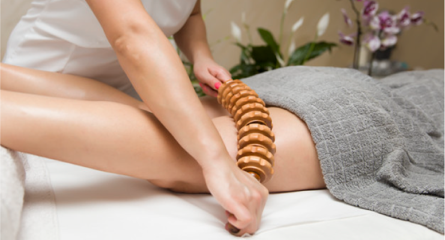
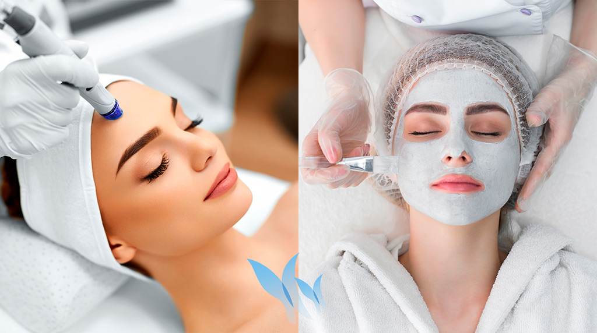
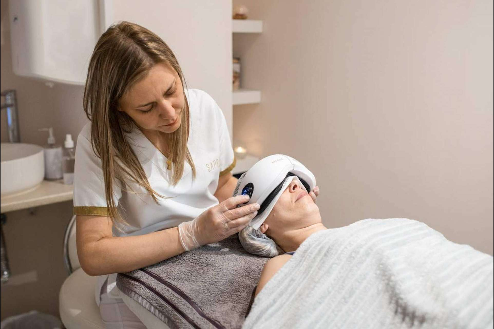

Maderoterapia
Estimula el cuerpo con diferentes utensilios de madera
que se adaptan a las diferentes zonas del cuerpo, con el objetivo de reducir
los niveles de estrés y poder aliviar así los dolores musculares y articulares.

Punta de Diamante
Elimina en profundidad las células muertas de la piel.
Minimiza las marcas de acné, cicatrices superficiales y
arrugas finas. Favorece y mejora la circulación sanguínea
oxigenando y rejuveneciendo la piel por lo que lucirá mucho
más bonita.
Unifica el tono de la piel.

Gafas de presoterapia
Ofrece una serie de efectos importantes para mejorar
el aspecto de los ojos y su contorno: Notable reducción
en Bolsas y Ojeras. Contrarresta la aparición de las
molestas patas de gallo, que son debidas a la reducción
de la secreción sebácea en la zona.
Reestructura la zona periocular.